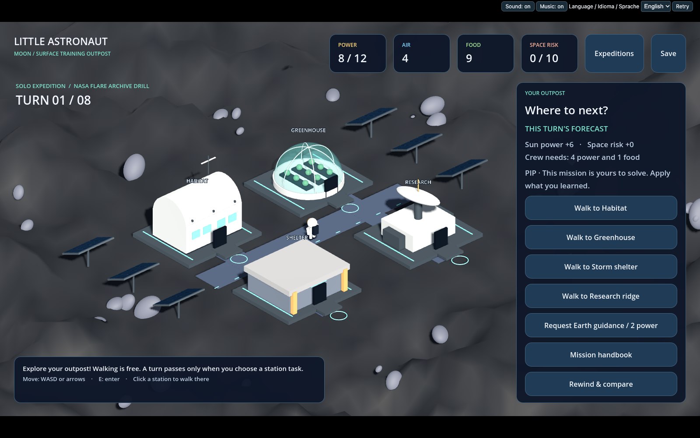

Pick your world.
Start on the Moon or Mars, then explore more destinations and stories inspired by space exploration.
Explore new worlds, take care of your crew, and discover what it takes to live in space—one decision at a time.
Free to play in your browser · No account needed for solo play

Space missions are full of decisions. In Little Astronaut, there’s room to explore, experiment, and learn from every turn.
Start on the Moon or Mars, then explore more destinations and stories inspired by space exploration.
Balance power, food and space radiation. Growing crops or doing science can mean giving up something else.
Rewind a decision, compare what happens, and use the in-game handbook to learn the science behind it.
Our Moon mission uses a real solar-flare record from NASA’s DONKI archive as the starting point for a fictional shelter decision. The science is real; the game’s risk points and events are simplified for learning.
Explore the NASA observation ↗A historical observation—not live space weather or a measurement of an astronaut’s radiation dose.
Bring your curiosity. We’ll bring the outpost.
Launch Little AstronautSolo play is available without an account. Sign in to save progress or play with a crew.